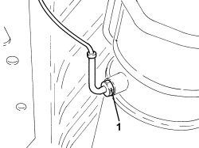
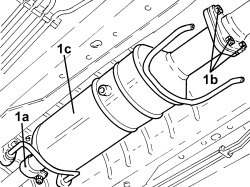

1080B81 PARTICULATE FILTER (D.P.F.) - R R
- Path
- Procedures > 10 ENGINE > 1080 EMISSION CONTROL SYSTEM > 1080B EXHAUST EMISSION CONTROL SYSTEM > 1080B81 PARTICULATE FILTER (D.P.F.) - R R
- Kind
- repair procedure (removal / refitting; the operation number is the code)
- Applies to
- engines: 1.9 JTD 8V, 1.9 JTD 16V, 2.4 JTD 20V; all production periods
- Interactive page
- https://sloeber94.github.io/elrnDB/#/939010625
Applies to: engines: 1.9 JTD 8V, 1.9 JTD 16V, 2.4 JTD 20V; all production periods
 Removing
Removing
 Refitting
Refitting- Position the vehicle on a lift.
1. Undo bolts (1a), nuts (1b) and remove the particulate filter bracket (1c).

Applies to: engines: 1.9 JTD 8V, 1.9 JTD 16V, 2.4 JTD 20V; all production periods
1. Loosen the collars and disconnect the hoses from the rigid pipes for the particulate filter differential pressure sensor.

Applies to: engines: 1.9 JTD 8V, 1.9 JTD 16V, 2.4 JTD 20V; all production periods
1. Unscrew the exhaust gas temperature sensor on the particulate filter and remove.

Applies to: engines: 1.9 JTD 8V, 1.9 JTD 16V, 2.4 JTD 20V; all production periods
1. Loosen collar (1a), unscrew nuts (1b) and remove the particulate filter (1c) complete with gasket.

Applies to: engines: 1.9 JTD 8V, 1.9 JTD 16V, 2.4 JTD 20V; all production periods
1. Working at the bench, unscrew connector (1a) and remove the pressure intake pipe downstream of the particulate filter (1b).

Applies to: engines: 1.9 JTD 8V, 1.9 JTD 16V, 2.4 JTD 20V; all production periods
Refitting
Removing1. Refit the pressure intake pipe downstream of particulate filter (1a) and tighten connector (1b) to the specified torque.
Component | Fastening | dia | Value (daNm) | Validity |
|---|---|---|---|---|
Pressure intake pipe downstream of particle filter | Connector | M8 | (D.P.F. particle filter side) 1.2 - 1.6 | 1.9 JTD 8V 1.9 JTD 16V 2.4 JTD 20V |

Applies to: engines: 1.9 JTD 8V, 1.9 JTD 16V, 2.4 JTD 20V; all production periods
1. Refit particulate filter (1a) with its gasket, then tighten collar (1b) and nuts (1c) to the specified torque.
Component | Fastening | dia | Value (daNm) | Validity |
|---|---|---|---|---|
Intermediate exhaust pipe with flexible section | Nuts | M8 | (D.P.F. particle filter side) 1.2 - 2.6 | 1.9 JTD 8V 1.9 JTD 16V 2.4 JTD 20V |

Applies to: engines: 1.9 JTD 8V, 1.9 JTD 16V, 2.4 JTD 20V; all production periods
1. Place the exhaust gas temperature sensor in its housing on the particulate filter and tighten it to the recommended torque.
Component | Fastening | dia | Value (daNm) | Validity |
|---|---|---|---|---|
Exhaust gas temperature sensor on particle filter | - | M14 | (D.P.F. particle filter side) 4.5 | 1.9 JTD 8V 1.9 JTD 16V 2.4 JTD 20V |

Applies to: engines: 1.9 JTD 8V, 1.9 JTD 16V, 2.4 JTD 20V; all production periods
- Connect the hoses to the rigid pipes for the particulate filter differential pressure sensor and tighten the collars.
- Place the particulate filter bracket in its housing and secure it using the bolts.
- Remove the vehicle from the lift.